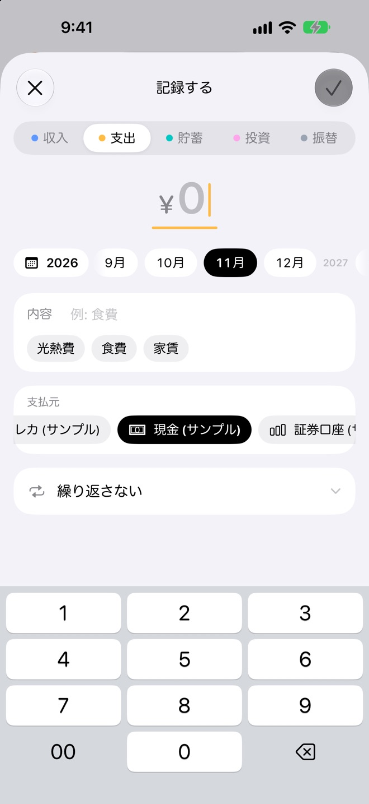

記録は、テンキーでさっと
収入・支出・貯蓄・投資・振替を選んで、金額を打つだけ。前に使った内容はボタンで選べて、支払いに使った口座もタップで切り替えられます。
- カードの引き落としなど口座どうしのお金の移動は「振替」で記録し、収支には数えません
- 毎月決まったお金は繰り返しにして、先の月にも予定として登録
- カードの引き落としを記録するときは、前の月のカードの利用額を金額の候補に出します
- 返金・払い戻しも記録できます
- 年払い・半年払いなど毎月ではない支出は「特別費の月割り」で、毎月取り分ける目安を表示します
- 声やショートカットからも、記録や今月の収支の確認ができます
